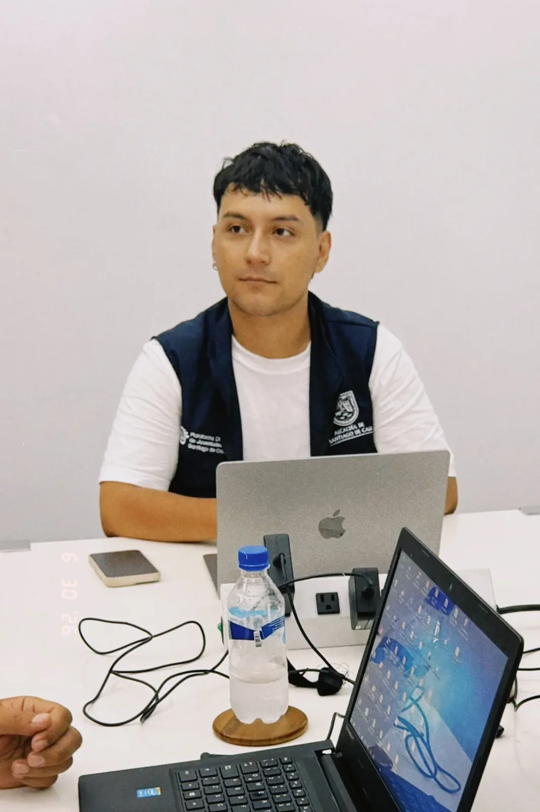
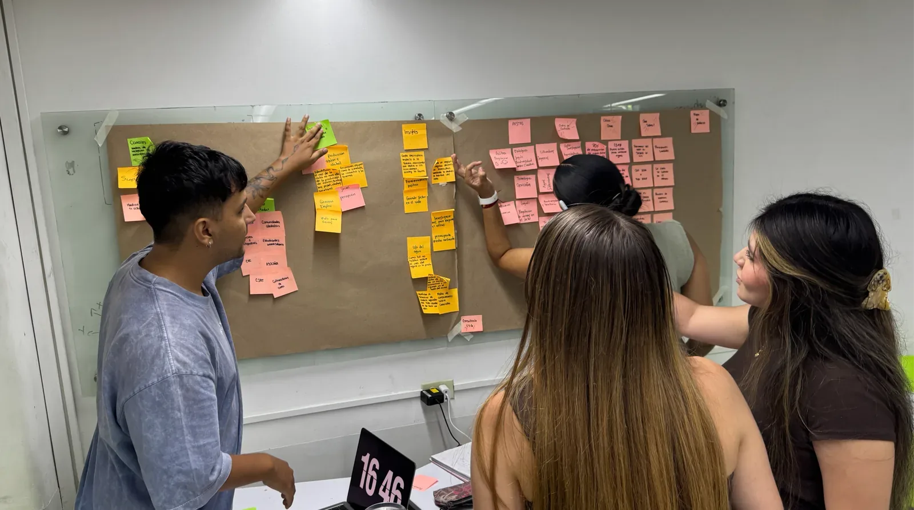
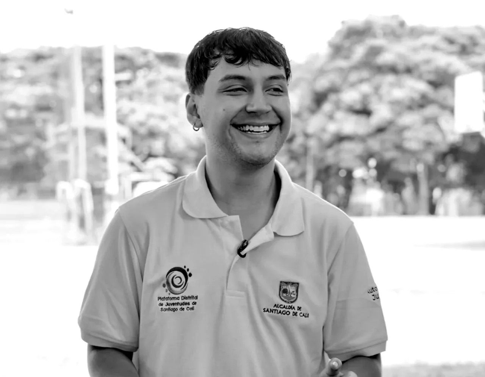

Alejandro Guerra Gómez
Comunicación Social – Periodismo
Universidad Autónoma de Occidente
Comunicación estratégica para organizaciones sociales, juventudes y derechos humanos.
Reconocimientos
- Oro, Premios Xpoiler 2025Por la investigación sobre violencia epistémica basada en género
- Ganador del reto Banco de OccidenteConsultoría en comunicación organizacional, 2026
- Defensor de derechos humanosReconocimiento de la Gobernación del Valle del Cauca, 2025
- Publicación científicaRevista Iniciación Científica, 2025
- Parlamento de las DiversidadesDirector ejecutivo, Federación Nacional de Juventudes
Proyectos
Comunicación, gestión social e investigación con organizaciones del Valle del Cauca y del Pacífico colombiano.
12 proyectos

Fundación Herencia de Timbiquí
Coordinador de comunicaciones, 2025–2026
Diseñé e implementé el plan estratégico de comunicaciones de la fundación y cubrí sus procesos comunitarios en el litoral Pacífico.

ASOJEM, Asociación Colombiana de Juventudes
Gestor social y analista de comunicaciones, desde 2024
 Oro en los Premios Xpoiler 2025
Oro en los Premios Xpoiler 2025Violencia epistémica basada en género en la academia
Investigación, Semillero de estudios de género UAO

Creación de contenido y cubrimiento
Redes sociales para organizaciones sociales
 Ganador del reto de consultoría
Ganador del reto de consultoríaBanco de Occidente
Plan de comunicación interna, 2026

Plataforma Distrital de Juventudes
Secretario general, desde 2026
Consorcio Juntos por Colombia
Director de comunicaciones, 2026

Global Shapers Cali Hub
Líder del proyecto “Gestión cultural cuir en Cali”

Contraloría del Valle del Cauca
Control social juvenil a la inversión pública

Paz territorial y periodismo
Investigación y reportajes sobre derechos humanos

Cenicaña
Campaña de divulgación sobre agua y El Niño

Maestro de ceremonias y tallerista
Debates, conversatorios y talleres con juventudes

Las comunidades necesitan proyectos con sus propias voces
En los últimos dos años diseñé y coordiné la comunicación de fundaciones, plataformas juveniles e instituciones públicas, articulando actores públicos, privados y comunitarios.
También me formo en administración pública, para que cada proceso de incidencia sea viable y sostenible.